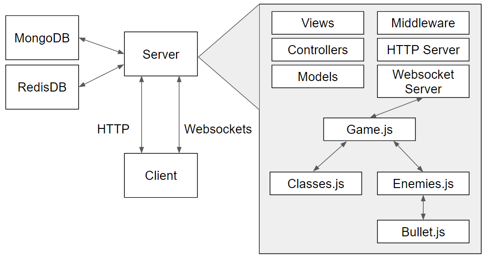

Project Description
A multiplayer co-op (up to 4 players) bullet-hell game where the players work together to take down enemies.
However the players can only attack by absorbing energy from the enemy bullet.
User Experience / Gameplay Mechanics
The user should be able to create/join rooms and start a game.
During gameplay the user should be able to move in a 2D space, use special abilities and a method to deal
damage to the enemy. Users can use special abilities by gaining enough energy, by getting close to the
enemy bullets, and then activating it by pressing a key. Players can also level up by gaining energy and
will have a set stat gain based on the players class. Each player will have a basic attack. This attack
can only be done by entering an player attack circle and then hitting a key. After attacking the circle
will dissappear and then reappear again, close to the player, after some time has passed.
The general concept will be similar to the original Bullet Absorber game I created. However, the turn-based
system is removed and the player attack and enemy attack are combinded.
Oringal Bullet Absorber
Controls
WASD - movement in Game
Shift - reduce movement speed
J- confirm / basic attack
K,L - special abilites
Post-Mortem
Things that Worked
I was able to get most of what I wanted into the app and was also able to incorporate my MVC mini project
into this project to allow players to compare scores with other users.
Things that Didn't Work
Although most of what I wanted was put into the project. I didn't have a lot of time to optimize the game much.
Since I am using setInterval for the game rooms each room runs asynchronously. But each room still seems to effect
each others framerate slightly.
I wasn't able to put in a grid collision detection so all bullets check collision with the each players. I could
aslo try to organize the data that is emited to the clients to speed up the time as well. Even without this optimizations
the framerate generally sits around 50~40 frames when theres a low bullet count. Frames drop to about 35~25 frames when theres a high
bullet count.
Right now the highscore page only sorts the scores by the enemies killed. Instead of having it set to only 1 sort I would like to change it
so that players can change the sort by whatever they want. I would probably do this by having the server send the record to the views and have
a javascript file somehow access the records. Then with on onchange function an on drop down it would sort the record array.
Since the server is the one creating the enemy bullets I wasn't exactly sure how to do sound effects when the enemy spawns new bullets. Even if I had time I am not sure exactly
how I would get it to work. I would like to eventually add in sound to this project at a later time.
Most Interesting Part
The most interesting part for me was getting websockets to communicate the the client and the game's js files. I spent a lot of time trying
to get it to work. There was a time when the game js functions needed the socket to emit but it felt really roundabout and I spend time restructuring
the socketio and game files. I think the way I have it right now works decently. This was probably also the most frustrating part of the project. Many
times the client and server's data would constantly override each other. For example if a player moved they users position would switch between the new
position the client sent to the server and the old position the server sent to the client. This doesn't visible happen locally so it was extremely time
consuming to try and fix. As of right now the client mainly controls the position of the player to prevent the studdering.
Architecture
